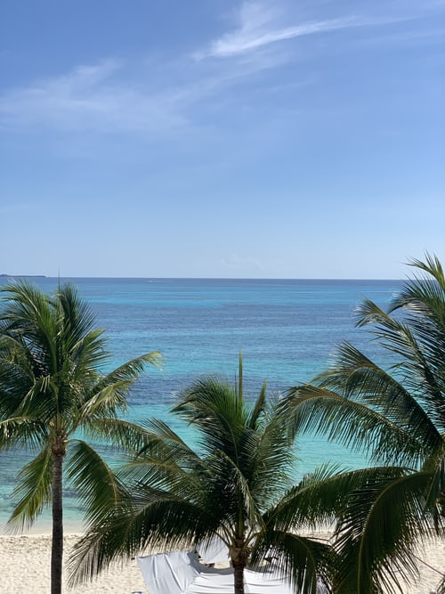
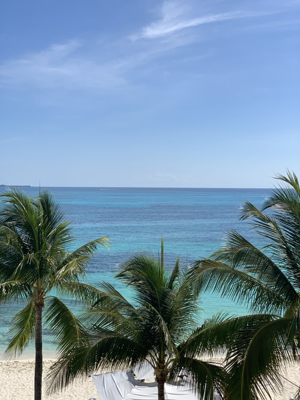

Cancún (/kænˈkuːn/ or /kɑːn-/;[2] Spanish pronunciation: [kaŋˈkun] About this soundpronunciation (help·info)) is a city in southeast Mexico on the northeast coast of the Yucatán Peninsula in the Mexican state of Quintana Roo. It is a significant tourist destination in Mexico[3] and the seat of the municipality of Benito Juárez. The city is on the Caribbean Sea and is one of Mexico's easternmost points. Cancún is just north of Mexico's Caribbean coast resort band known as the Riviera Maya. In older English-language documents, the city's name is sometimes spelled "Cancoon", an attempt to convey the sound of the name.
HOTELS IN CANCUN

 

Climates in Cancun
Cancún has a tropical climate, specifically a tropical wet and dry climate (Köppen Aw), with little temperature difference between months, but pronounced rainy and dry seasons. The city is hot year-round, and moderated by onshore trade winds, with an annual mean temperature of 27.1 °C (80.8 °F). Unlike inland areas of the Yucatán Peninsula, sea breezes restrict high temperatures from reaching 36 °C (97 °F) on most afternoons. Annual rainfall is around 1,340 millimetres (52.8 in), falling on 115 days per year. The rainy season runs from May through late October, when hot temperatures, high humidity, and quick, but intense summer thundershowers are common. The dry season normally begins in December and runs through April, when more temperate conditions occur as the northeast trade winds bring northerly breezes, sunshine, and relative humidity is lowest. The hotel zone juts into the Caribbean Sea and is therefore surrounded by ocean keeping daytime temperatures around 1 to 2 °C (1.8 to 3.6 °F) cooler. Windspeeds are higher than at the airport located some distance inland, which is the official meteorological station for Cancún, averages as shown below.[22] Thanks to the Yucatán current continually bringing warm water from further south, the sea temperature is always very warm, with lows of 79 °F (26 °C) in winter and highs of 84 °F (29 °C) in summer.[23]